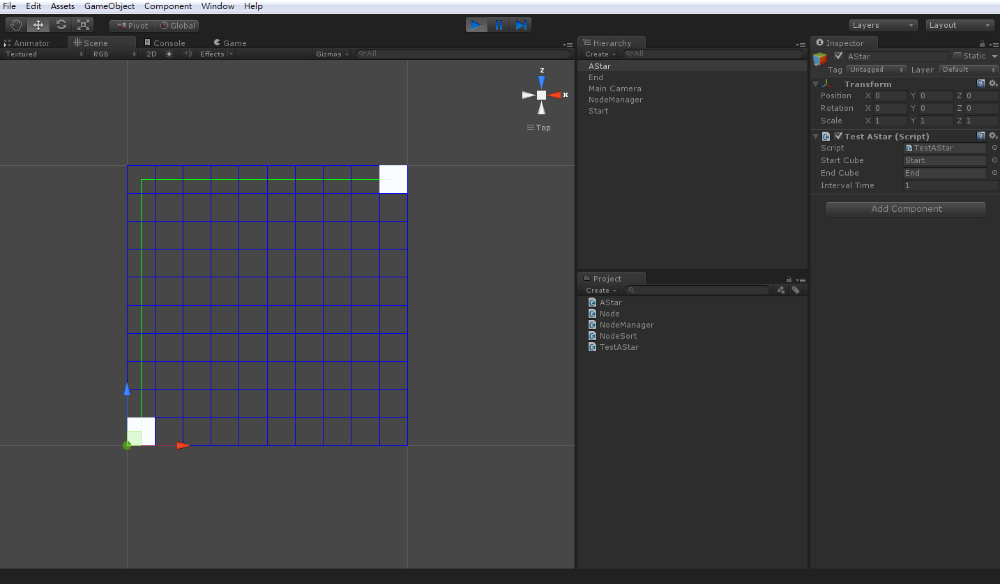

終於到了最後一步
可以看到辛苦理解後的實現成果了
新增一個 C# 腳本命名為 TestAStar.cs
using UnityEngine;
using System.Collections;
public class TestAStar : MonoBehaviour
{
//The start and end gameobject
public GameObject startCube, endCube;
private Transform startTransform, endTransform;
private Node startNode;
private Node endNode;
public ArrayList pathArray;
private float elapsedTime = 0.0f;
//Interval time between pathfinding
public float intervalTime = 1.0f;
void Start ()
{
startTransform = startCube.transform;
endTransform = endCube.transform;
pathArray = new ArrayList();
FindPath();
}
void Update ()
{
elapsedTime += Time.deltaTime;
if (elapsedTime >= intervalTime)
{
elapsedTime = 0.0f;
FindPath();
}
}
void FindPath()
{
//Get start node with position
startNode = new Node( NodeManager.instance.GetNodeCenter( startTransform.position ) );
//Get end node with position
endNode = new Node( NodeManager.instance.GetNodeCenter( endTransform.position ) );
pathArray = AStar.FindPath(startNode, endNode);
}
//Display the a-star path finding line
void OnDrawGizmos()
{
if (pathArray == null)
return;
if (pathArray.Count > 0)
{
for( int cnt = 0; cnt < pathArray.Count; cnt++ )
{
if( cnt <= pathArray.Count - 2 )
Debug.DrawLine( ( (Node)pathArray[cnt] ).position, ( (Node)pathArray[cnt + 1] ).position, Color.green);
}
}
}
}
這個腳本主要是用來呼叫前面幾篇寫好的方法
直接來看怎麼使用 TestAStar.cs
在場景中新增一空物件取名為 AStar
並新增兩個 Cube 分別取名為 Start 以及 End 當作起始點與終點
並將兩個 Cube 分別拉近 AStar 欄位中
執行開始則會看到實作結果
